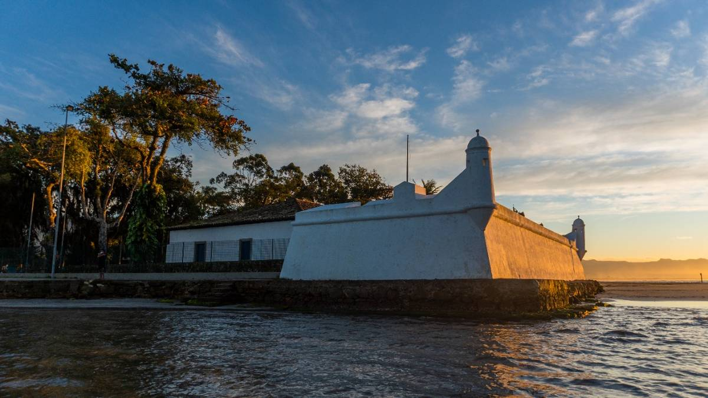
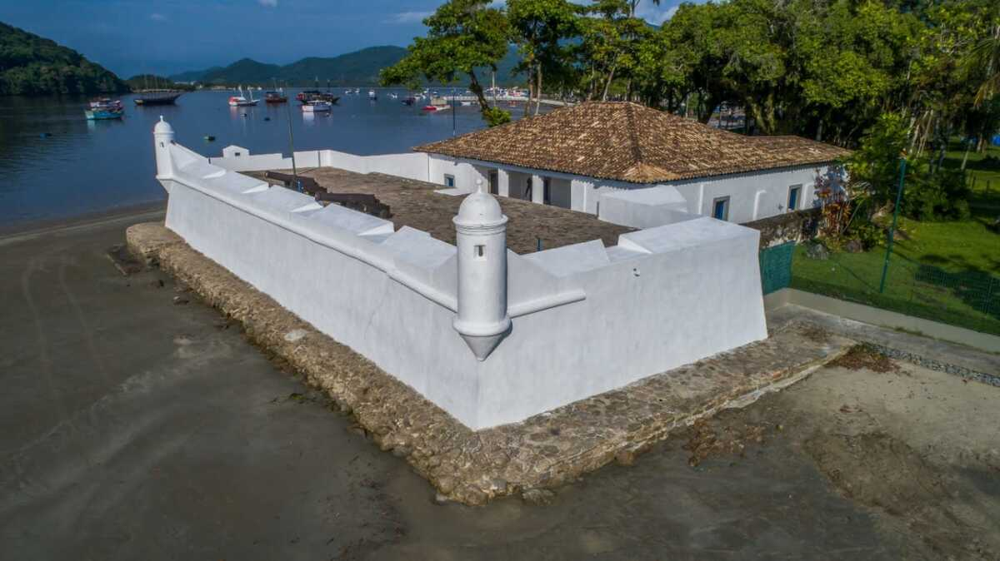

Bertioga - Baixada Santista
DICAS EM BERTIOGA
Por Luis Carlos Negri*
Na divisa do litoral sul para o litoral norte, está localizada Bertioga. Pequena cidade litorânea
com a graça de Hans Staden, um alemão que foi prisioneiro dos Tupinambás nos meados do século XVI, publicou na
Alemanha um dos primeiros livros de “aventuras no Brasil”. Em Bertioga pode-se ver o Forte de São João e sentir
como era a vida na região no início do século XVI, época em que Hans Staden esteve por aqui.


Forte de São João - Diário do Litoral
História
A história de Bertioga está ligada à construção do Forte de São Tiago, ordenada por Martim
Afonso
de Souza em 1532.
Originariamente, era uma paliçada de madeira que tinha como objetivo proteger a entrada da Barra de Bertioga
de
ataques indígenas e das incursões francesas. Por volta de 1557, devido aos danos causados pelas frequentes
investidas inimigas, a paliçada de São Vicente mandou substituir essa paliçada por uma construção de
alvenaria
de pedra e cal.
Nessa época, já havia se instalado um núcleo de povoamento na linha da praia, defendida pelo outeiro de
Buriquioca (do tupi-guarani, “morada dos macacos”), mais tarde conhecido por Morro da Senhoria.
Em 1710, o forte sofreu novos reparos e, em 1765, ganhou uma capela e seu nome passou a ser São João.
Assumiu sua forma atual em 1817, com a intervenção do oficial José Felizardo. O forte centralizou o
desenvolvimento de um povoado de pescadores e depois do balneário de Bertioga. Administrativamente, Bertioga
tornou-se distrito do município de Santos, em 30 de novembro de 1944. Adquiriu autonomia política em 30 de
dezembro de 1991.
Fonte: Fundação SEADE - 2006
Feito por: André Silva, Camila Martinez, João Gabriel e Antony José